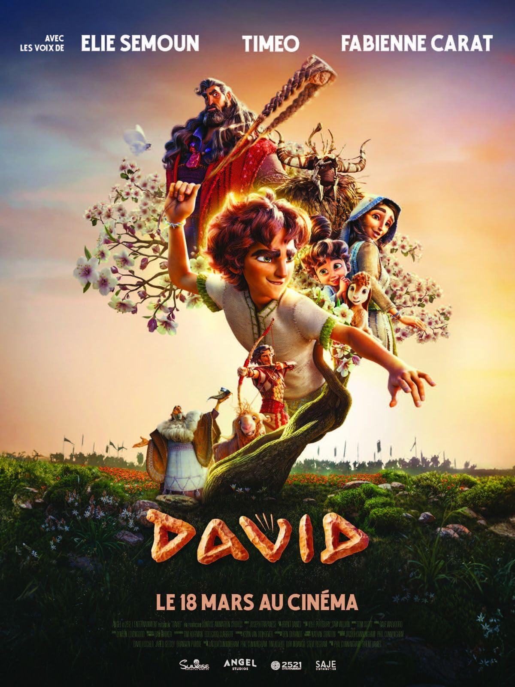
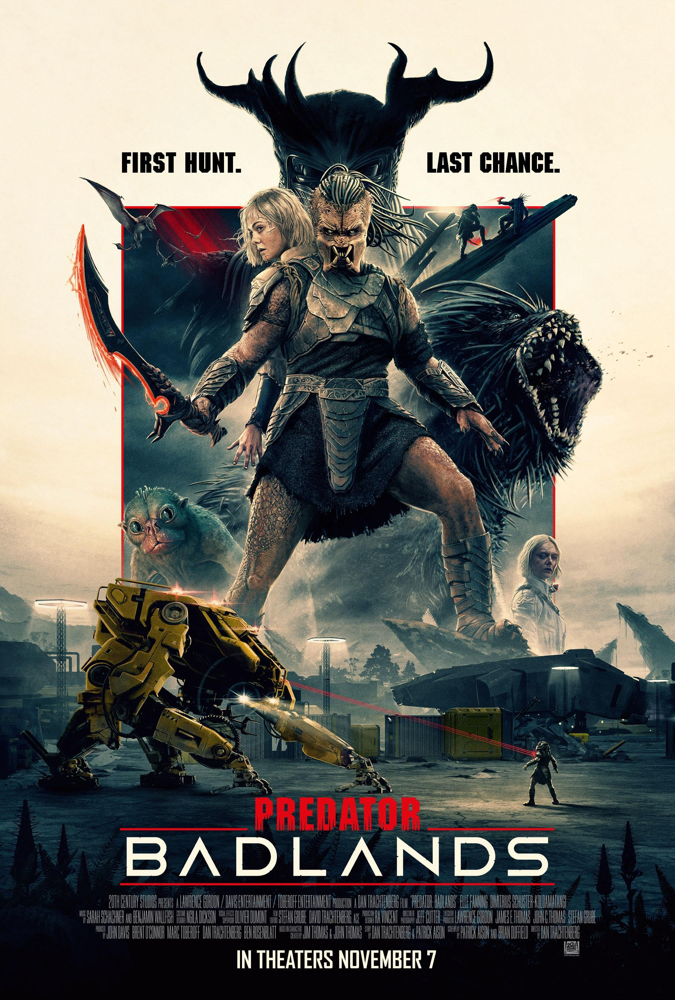
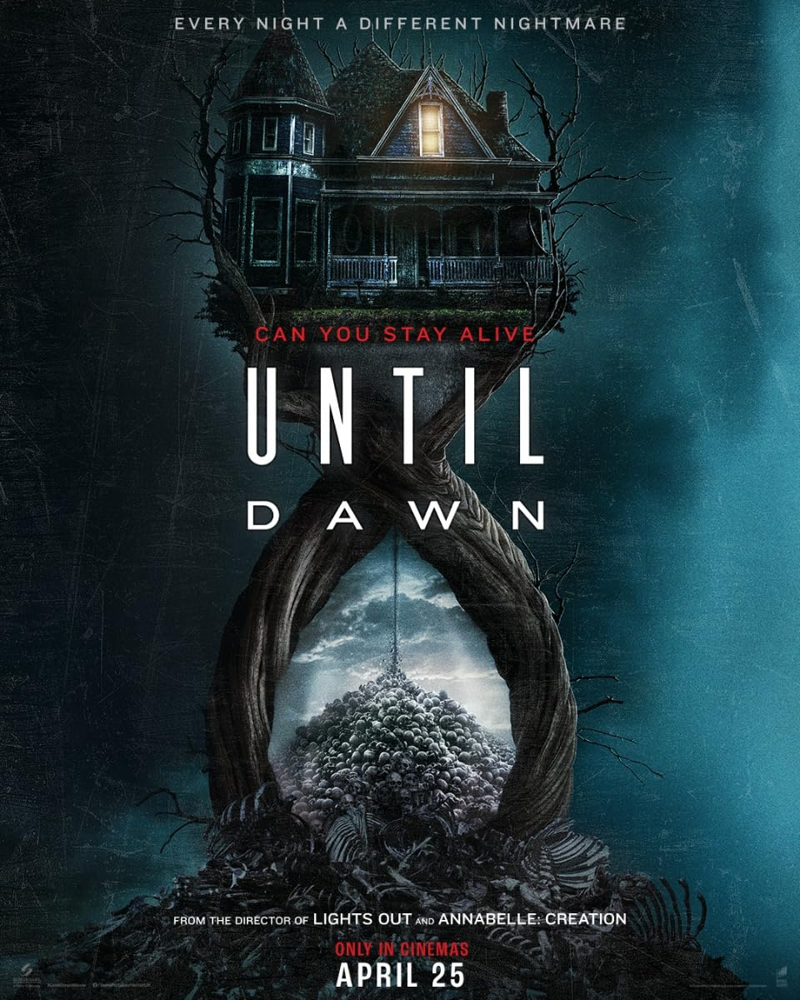
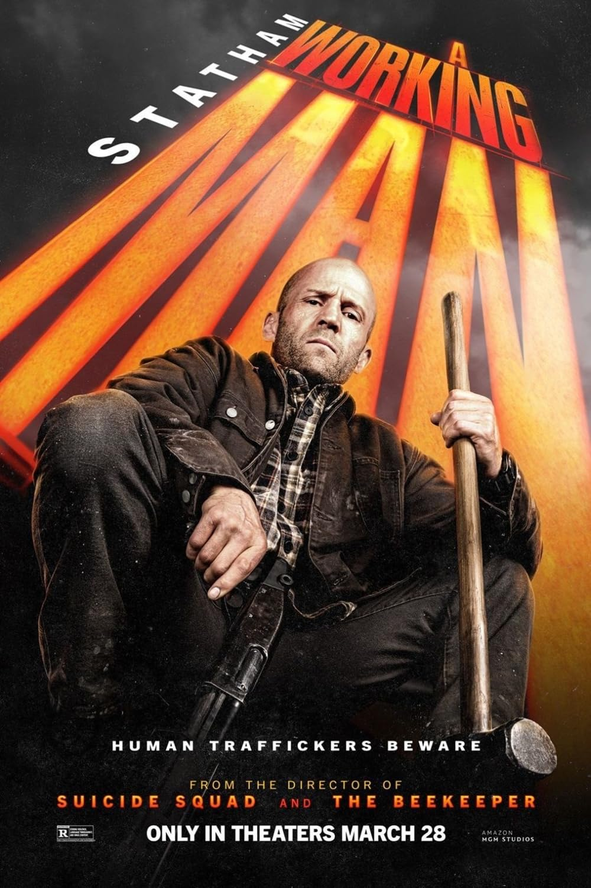
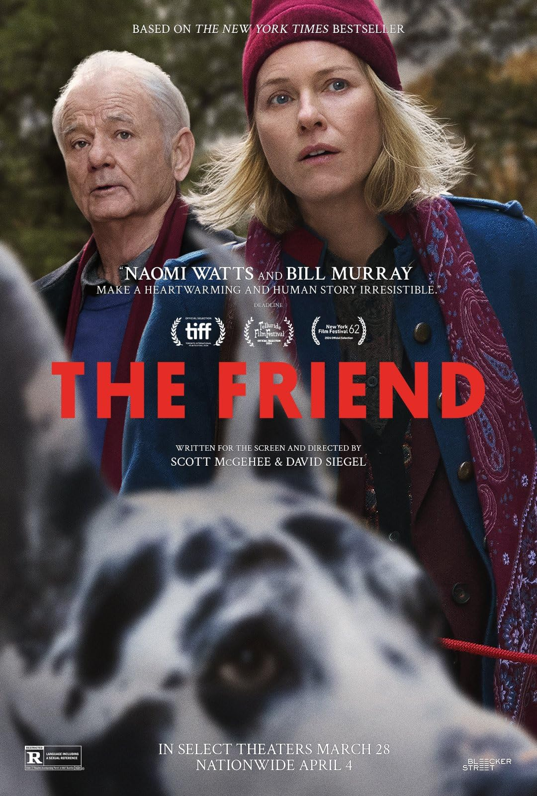
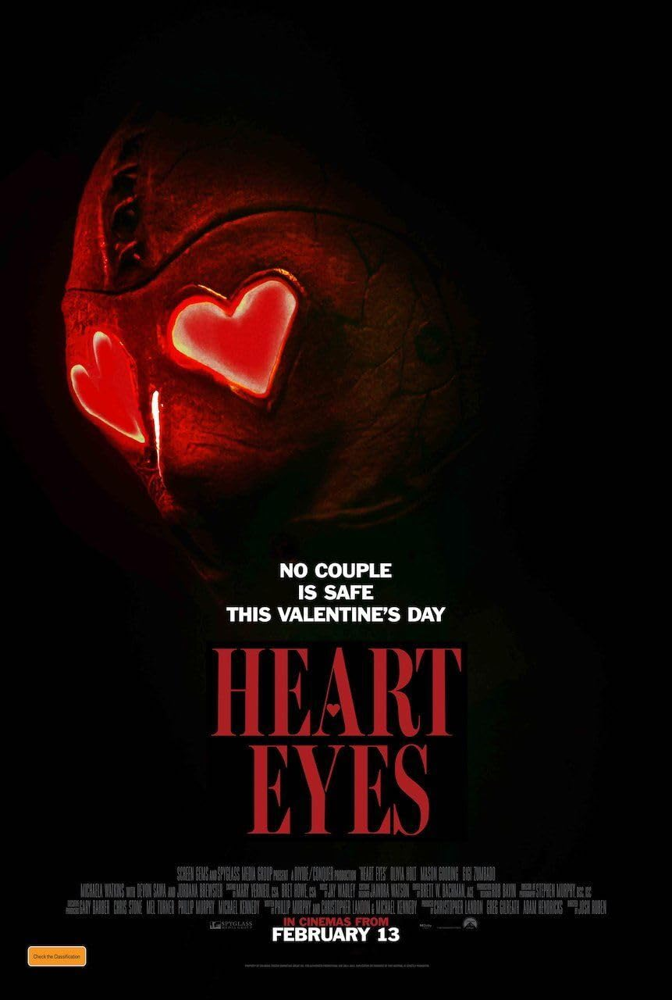
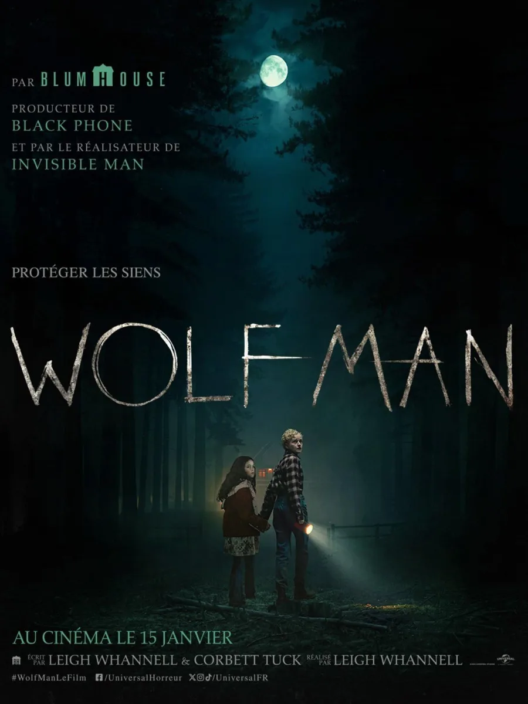
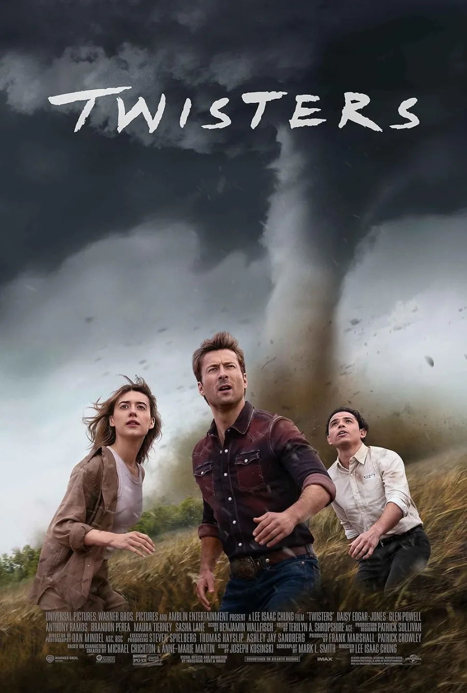
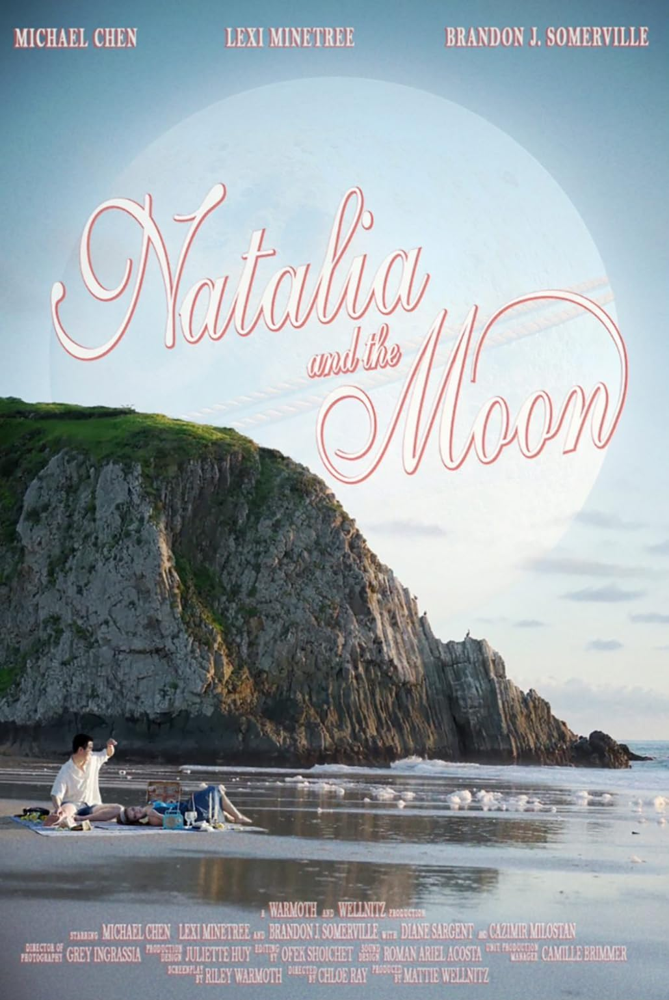
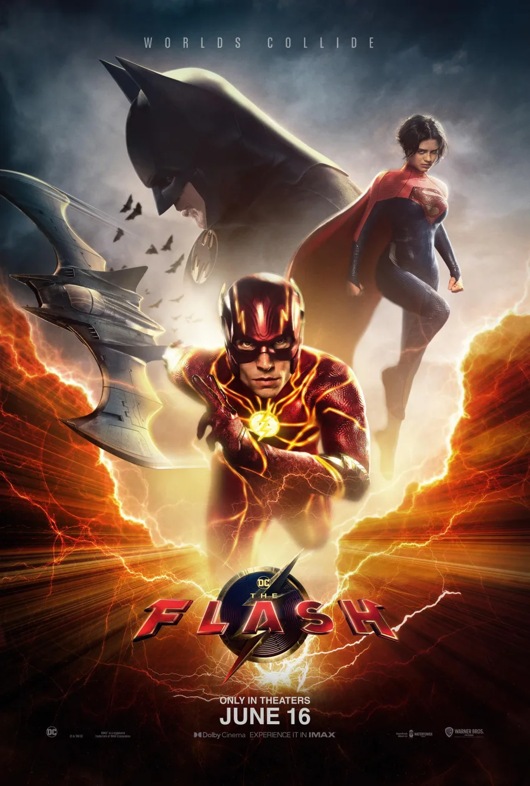

Capturing the Unspoken
Credits include










Sebastian Winter
Composer
Sebastian Winter is a film composer based between New York and Los Angeles whose music combines orchestral command, emotional precision, and cinematic scale. A graduate of The Juilliard School, where he studied with Academy Award-winning composer John Corigliano, Winter’s music has been performed at venues including Carnegie Hall, and he previously worked at Hans Zimmer’s Remote Control Productions in Santa Monica.
His creative background spans major studio films and series including Alien: Romulus, Twisters, The Flash, Kraven the Hunter, Wolf Man, The Conjuring: Last Rites, It: Welcome to Derry, Predator: Killer of Killers, Predator: Badlands, Mortal Kombat II, Hellboy, Quiz Lady, and Franklin. Across his original scores, Winter channels that large-scale cinematic experience into music built for emotion, suspense, romance, wonder, and grandeur.
For directors, his work offers Hollywood-scale orchestral craft with a composer’s focus on story, character, and emotional impact.
Cinematic Excerpts
Current track: A Quiet Goodbye, Thriller/Horror.